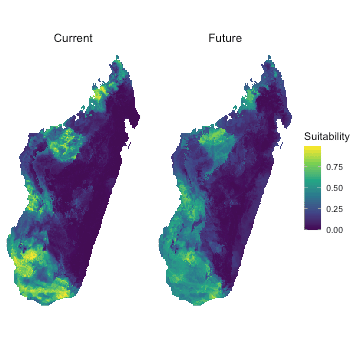
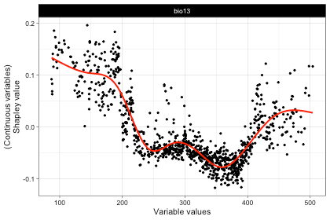
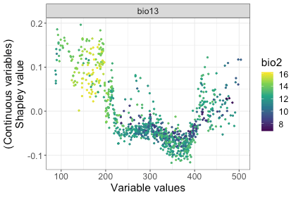
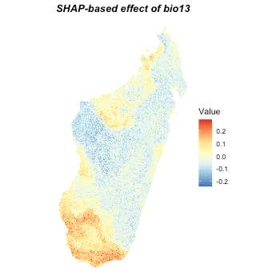
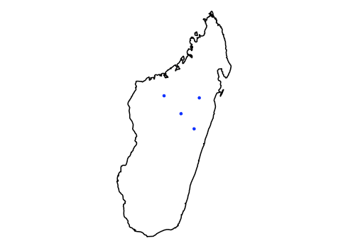
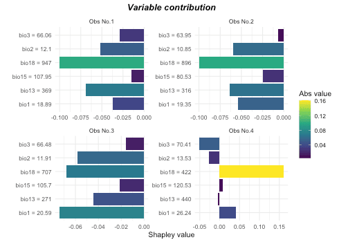
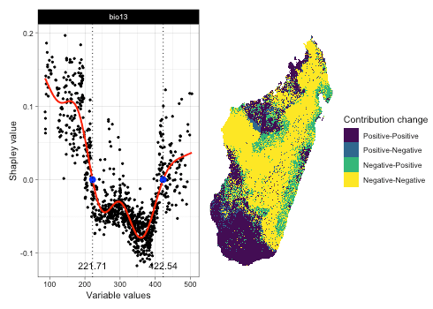

vignettes/shap_application.Rmd
shap_application.RmdIn itsdm, Shapley values-based functions can be used
both by internal model iForest and external models which is fitted
outside of itsdm. These functions can analyze spatial and
non-spatial variable responses, contributions of environmental variables
to any observations or predictions, and potential areas that will be
affected by changing variables.
In this vignette, we show how an external model can be used for these functions with an example of Random forest (RF) model on Baobab trees of Madagascar.
# Set study area, Madagascar
study_area <- ne_countries(
scale = 10,
continent = 'africa', returnclass = 'sf') %>%
filter(admin == 'Madagascar') %>%
select()
# Get training data
## Search via GBIF
occ <- occ_search(
scientificName = "Adansonia za Baill.",
hasCoordinate = TRUE,
limit = 200000,
hasGeospatialIssue = FALSE) %>%
`[[`("data") %>%
select(decimalLongitude, decimalLatitude)
## Clean the occurrences spatially
occ <- occ %>%
st_as_sf(coords = c('decimalLongitude', 'decimalLatitude'),
crs = 4326)
occ <- st_intersection(study_area, occ)
# Get environmental variables for current and future
bios_current <- worldclim2(
var = 'bio', res = 2.5,
bry = study_area,
path = tempdir(),
nm_mark = 'africa') %>%
st_normalize()
# Remove highly correlated variables
bios_current <- dim_reduce(
bios_current,
threshold = 0.7,
preferred_vars = c(paste0("bio", c(1:3, 13))))
bios_current <- bios_current$img_reduced
# Query the future variables
bios_future <- future_worldclim2(
var = 'bioc', res = 2.5,
bry = study_area,
interval = "2041-2060",
path = tempdir(),
nm_mark = 'sa') %>%
st_set_dimensions("band", values = paste0("bio", 1:19)) %>%
dplyr::slice("band", st_get_dimension_values(bios_current, "band")) %>%
st_normalize()
## Spatial deduction
template <- bios_current %>%
dplyr::slice("band", 1) %>%
mutate(reduced_image = NA)
occ <- st_rasterize(
occ, template) %>%
st_xy2sfc(as_points = T) %>% st_as_sf() %>%
select(geometry)
rm(template)
## Extract environmental values
training <- st_extract(
bios_current %>% split("band"), occ) %>%
st_drop_geometry() %>%
mutate(occ = 1)
## Get background values
set.seed(124)
background <- randomPoints(
as(bios_current %>% dplyr::slice("band", 1), "Raster"), 1000)
background <- st_extract(bios_current, background) %>%
as.data.frame() %>% na.omit() %>%
mutate(occ = 0)
names(background) <- c(st_get_dimension_values(bios_current, "band"), "occ")
# Put them together
training <- rbind(training, background) %>%
na.omit() %>%
select(c("occ", st_get_dimension_values(bios_current, "band")))
# Convert independent to factor for RF.
training$occ <- as.factor(training$occ)
# Calculate class frequency
prNum <- as.numeric(table(training$occ)["1"]) # number of presences
bgNum <- as.numeric(table(training$occ)["0"]) # number of backgrounds
samsize <- c("0" = prNum, "1" = prNum)
# Fit the down-sampling RF
set.seed(123)
mod_rf <- randomForest(
occ ~ .,
data = training,
ntree = 1000,
sampsize = samsize,
replace = TRUE)
# Reformat the variables
bios_current <- bios_current %>% split("band")
bios_future <- bios_future %>% split("band")
# Suitability under current and future conditions
suit_current <- predict(bios_current, mod_rf, type = "prob")["1"]
suit_future <- predict(bios_future, mod_rf, type = "prob")["1"]
# Plot them
preds <- c(suit_current, suit_future)
names(preds) <- c("Current", "Future")
ggplot() +
geom_stars(data = preds %>% merge(name = "band"),
na.action = na.omit) +
scale_fill_viridis_c("Suitability") +
facet_wrap(~band) +
coord_equal() +
theme_void() +
theme(strip.text.x = element_text(size = 12))
This is probably the most important argument to set in order to get proper result. Here is the example for Random Forest SDM used in this vignette:
## Define the wrapper function for RF
## This is extremely important to get right results
pfun <- function(X.model, newdata) {
# for data.frame
predict(X.model, newdata, type = "prob")[, "1"]
}As we could see, the wrapper function has to have at least two
arguments: model object and the newdata. Then the function body has to
make the proper prediction on the newdata. For instance, we have to set
type = "prob" to let RF make probabilities and we have to
subset the result to make it give us the probabilities of being
presence.
# Make the response curves
respones <- shap_dependence(
model = mod_rf,
var_occ = training[, 2:ncol(training)],
variables = bios_current,
pfun = pfun)
# Check bio13, Precipitation of Wettest Month, for example
plot(respones, target_var = "bio13")
# Check relationship between bio13 and bio2 for example
# These plots can be extended as they are ggplot2 plot, like this:
plot(respones, target_var = "bio13",
related_var = "bio2", smooth_line = FALSE) +
theme_bw() +
theme(text = element_text(size = 16))
rsp_maps <- shap_spatial_response(
model = mod_rf,
var_occ = training[, 2:ncol(training)],
variables = bios_current,
pfun = pfun)
# Check the response map of bio13, for example
plot(rsp_maps, target_var = "bio13")
# Take some observations for example
set.seed(124)
occ_to_check <- randomPoints(
as(bios_current %>% select("bio1"), "Raster"), 4)
vars_to_check <- st_extract(bios_current, occ_to_check) %>%
as.data.frame()
# Do the calculation
var_ctris <- variable_contrib(
model = mod_rf,
var_occ = training[, 2:ncol(training)],
var_occ_analysis = vars_to_check,
pfun = pfun)
# Check it
## Spatial locations
ggplot() +
geom_sf(data = study_area, fill = "transparent", color = "black",
linewidth = 0.8) +
geom_sf(data = st_as_sf(data.frame(occ_to_check),
coords = c("x", "y"), crs = 4326),
color = "blue") + theme_void()
# The contributions of variables to each observation
plot(var_ctris, plot_each_obs = TRUE, num_features = 6)
bio13_changes <- detect_envi_change(
model = mod_rf,
var_occ = training[, 2:ncol(training)],
variables = bios_current,
target_var = "bio13",
variables_future = bios_future,
pfun = pfun)
# Check the result
plot(bio13_changes)